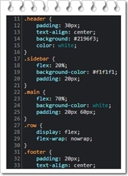

Propósito del sitio
En este sitio se exponen de manera resumida el concepto de Hojas de Estilo en Cascada CSS y de un Frameworks CSS, con el fin de esclarecer qué es, su propósito y uso, brindando más o menos una idea de como seria trabajar con ellos.
Hojas de Estilo en Cascada CSS
CSS Corresponde a las siglas en inglés de “Cascading Style Sheets”. Una hoja de estilos es una serie de códigos que definen el aspecto o presentación de los elementos de una página. Siendo así el término “cascada”, se refiere a cómo se encuentran distribuidos los elementos en la hoja de estilo, desde el componente primario a los detalles más específicos. Esta técnica consiste en separar el diseño del contenido, de manera que las indicaciones para conformar el diseño se agrupan en una hoja de estilo o archivo que está fuera del contenido del documento de la página HTML.